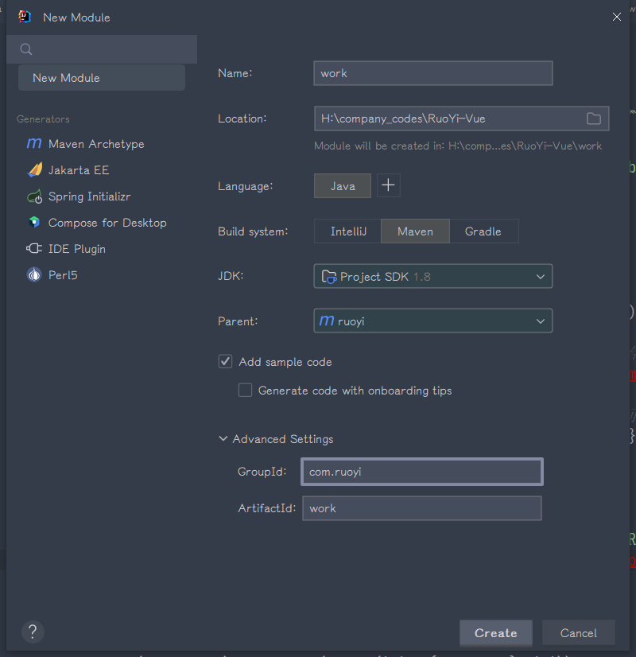
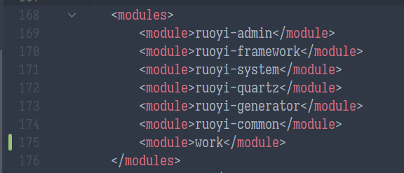
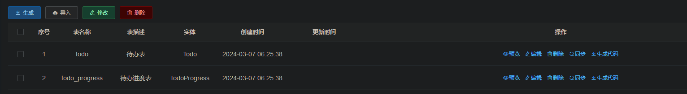
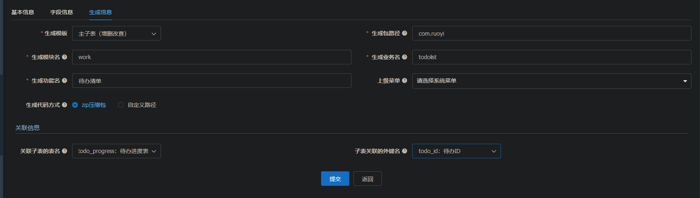
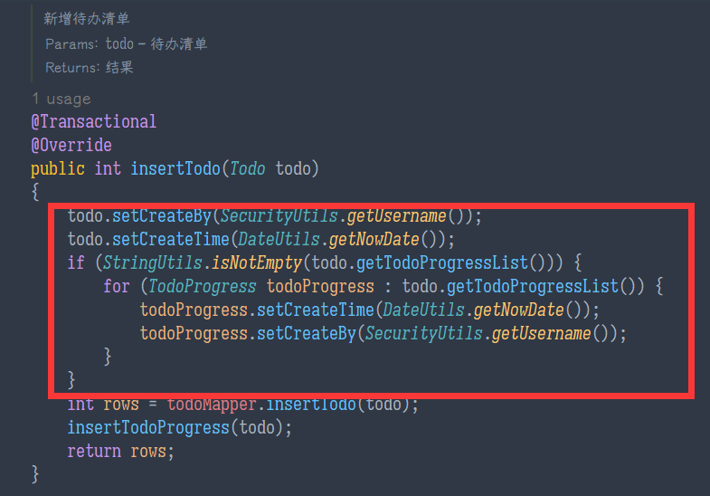
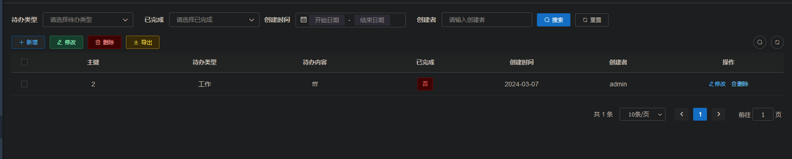
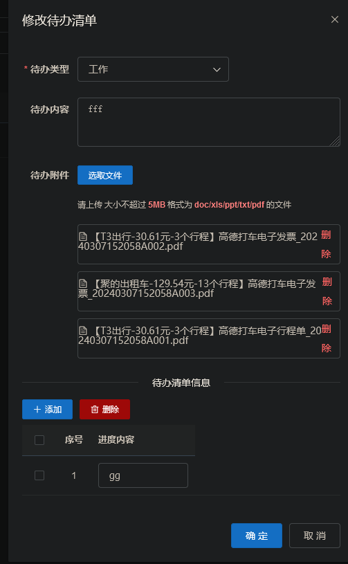

RuoYi-Vue 后端笔记
公司要求了解一下，于是就去了解一下，本以为能提升一些生产力，结果一看也不过如此。
使用 RuoYi-Vue，即 RuoYi 的单体，前后端分离的版本，
记录一些重要概念，以及完成一个业务模块的后端，包括打包发布，尽量使用代码生成。注意 RuoYi-Vue 的文档是 http://doc.ruoyi.vip/ruoyi-vue/，其中一些章节引用 http://doc.ruoyi.vip/ruoyi/，后者未被引用的部分不应参照。FAQ 部分也值得阅读，其讲述了一些实际问题的处理方案，如跨域，不登录查看，token 过期时间等。
开发环境部署
- 安装 node，jdk，启动 mysql，redis
- 执行
git clone https://gitee.com/y_project/RuoYi-Vue - 使用 IDE 打开项目，编辑
ruoyi-admin/src/main/resources/application.yml配置 redis，编辑同目录下application-druid.yml配置 mysql 数据源 - 启动后端：执行
ruoyi-admin/src/main/java/com/ruoyi/RuoYiApplication.java - 访问
localhost:8080，检查有正确响应 - 进入
ruoyi-ui，执行npm i安装依赖 - 执行
npm run dev，启动前端开发服务器 - 访问
localhost:80，检查页面正常显示
权限系统
概念：用户，角色，部门，岗位，接口，菜单权限，数据权限。
岗位独立存在，不和其它概念关联（甚至不和部门关联），似乎只有标识作用。
每个用户属于且只属于单个部门，用户可以有多个岗位和多个角色。
角色包含权限（页面中称为菜单权限，后端称为 Permi）和数据权限（后端称为 DataScope）信息，前者标识是否有权看到菜单（和调用接口），后者标识能看到表中的哪些范围的数据（即行权限）。
角色的数据权限可以和用户的部门相关，如只能看本部门数据，也可指定能够查看特定部门数据。
菜单和菜单权限是绑定的，每个菜单都使用特定权限标识。后端实现中，可以通过权限和角色来标识用户是否有权调用该接口：
1 | |
前后端的鉴权是分开的（实际上它们根本没有被关联上吧？甚至拼写错误都无法避免），菜单需要对应特定权限不代表后端不需要做校验。
数据权限
重申：每个角色都有自己的数据权限，任一角色的数据权限满足约束时用户就能看到该数据。数据权限需要使用@DataScope注解，其定义上有一些问题，注释语焉不详，参照源码大概是下面的语义：
| 参数名 | 是否必填 | 示例 | 描述 |
|---|---|---|---|
| deptAlias | Y | d | 必填，使 SQL 中插入按部门的数据权限校验，SQL 中会查询{deptAlias}.dept_id作为部门字段，检查该字段的值满足约束（如当前部门，当前部门及其子部门等） |
| userAlias | N | u | 选填，如果填写，则使 SQL 中插入按个人的数据权限校验，SQL 中会查询{userAlias}.user_id作为用户字段，检查其等于当前用户的 ID |
| permission | N | system:user:add,system:user:edit | 根据权限限定要生成数据域 SQL 的角色 ，只选择包含这些权限中任一的角色去生成 SQL，默认走@PreAuthorize中指定的权限 |
一些细节如下：
- 管理员拥有所有所有数据权限
- 如果用户有多个角色，（筛选后的，见第 5 条）每个角色都会根据其的数据权限生成对应的 SQL 并用
OR连接 userAlias只在用户的角色的数据权限设定为仅本人且userAlias被填写时才被使用，未填写userAlias时，仅本人的约束不起作用- 如果方法上有多个参数，需要第一个参数为
BaseEntity类型及其子类，生成后的 sql 会赋给其的params的dataScope - permission 字段根据权限去限定用户的参与数据域检查的角色，如果 permission 未填写，则默认走
@PreAuthorize("@ss.hasAnyPermi(..)")和@PreAuthorize("@ss.hasPermi(..)")中指定的权限（底层是在 ss 的两个方法调用中把参数设定到上下文中，在DataScope的逻辑中取它）。如果PreAuthorize中检查的是用户的角色而非权限，那就不做角色上的限定；相关代码见com.ruoyi.framework.aspectj.DataScopeAspect#dataScopeFilter的 75，103 行和com.ruoyi.framework.web.service.PermissionService#hasPermi的 38 行
在方法上定义注解后，还是需要手动在 XML 中引用其生成的 SQL 代码，详细见 http://doc.ruoyi.vip/ruoyi/document/htsc.html#数据权限。下面是一个完整例子，其中方法上的注解为@DataScope(deptAlias = "d")，它使用左连接把部门表引入进来并重命名为d来用来筛选，也有骚操作是直接把当前的表重命名为 d，使它引用当前表的dept_id字段；注意这里虽然没有使用到sys_user但还是把它引入进来了，因为需要通过用户才能找到用户的部门：
1 | |
代码生成
参考 https://blog.csdn.net/m0_70208154/article/details/127471641
RuoYi 支持生成从 XML 到前端 vue 的一系列代码，支持单表、树表、主子表（一对多关系）的生成，其中主子表只能有一种子表。以及多对多关系是不支持的。使用文件上传控件，接受文件 ID 这样的需求同样不被支持。在代码生成且进行过编辑后，再想要迭代的话就无法再直接利用上代码生成了。我不如用 Mybatis Plus 反而更舒服。
代码生成的步骤是：
- 若有需要的话，在
ruoyi-generator/src/main/resources/generator.yml中配置表前缀 - 如果还未创建业务代码项目，建立代码所在 Maven 项目，该项目
parent指定为ruoyi，并作为ruoyi-admin的依赖，该项目应当依赖ruoyi-common - 建字典，建表，点击
系统工具-代码生成-导入导入所生成的表，并点击编辑按需修改 - 点击生成代码（主子表只需生成主表的），下载 ZIP，执行其中的菜单 SQL，拷贝 main 文件夹的内容到后端项目的
src/main中，拷贝 vue 文件夹的内容到ruoyi-ui/src - 重启后端（前端能热更新）
代码生成使用 apache velocity 作为模板语言，可以进行自定义，路径为 ruoyi-generator/src/main/resources/vm。
RuoYi 生成的 Entity 会继承com.ruoyi.common.core.domain.BaseEntity，该 Entity 中包含创建、更新时间等字段，若表中包含（下划线分割的）同名字段则不会在子类上定义相应字段，这些字段分别为：
- create_by
- create_time
- update_by
- update_time
- remark
考虑建表时主动定义这些字段以避免后续使用时混淆。
代码生成表配置
导入后，点击编辑去配置表，其包含三个界面，各界面的一些可能不清楚的点如下：


字段信息中，编辑这一列似乎没有任何影响。此外对于主键以及 createTime，createBy，updateTime，updateBy 四个字段，添加和编辑这两列是否选中都不会让它被显示出来。
此外，生成主表时，关于子表信息，似乎是只有选中了“列表”才会显示在主表实体的添加、编辑页面中……这是 bug 吗？
待办清单示例
整个待办清单作为示例，有如下需求：
- 有两种角色——employee 和 employer，前者只能看到自己的待办清单，后者看到本部门的待办清单，但只能操作自己的待办
- 待办包含类型（走字典），内容，是否完成，附件，创建时间等信息
- 待办可以记进度，一条待办可以记录多个进度，查看待办详情时应当也能看到进度列表
- 能查询是否完成，的待办，能按创建时间区间做查询，列表按截止时间升序排列
预计一级模块名为 work，二级模块名为 todolist，业务名为待办清单，包名为com.ruoyi.work.todolist（如果不以com.ruoyi起头的话就需要编辑 Bean 扫描的包了，或者把所有项目的名字全都改掉）。
RuoYi 没有提供文件管理功能，但提供了相应接口去做上传下载，接口见
建立 work 模块
新建子模块的流程见 http://doc.ruoyi.vip/ruoyi/document/htsc.html#新建子模块。
- 建立 maven 项目置于
ruoyi-admin同级，指定父项目为ruoyi，groupId为com.ruoyi，artifactId为work

此时ruoyi/pom.xml中的 modules 部分应当也引用 work：

- 编辑
ruoyi/pom.xml，指定work的版本：
1 | |
- 为
work添加ruoyi-common依赖，其中包含 spring 和 ruoyi 相关依赖：
1 | |
- 让
ruoyi-admin依赖work：
1 | |
定义字典
- 定义字典类型

- 定义字典项

定义表
这里的需求是主子表，主表是待办，子表是待办进度。
1 | |
代码生成
进入系统工具-代码生成，点击导入，导入两表：

根据需求编辑主表信息：


编辑进度表信息：

进度表只选中进度内容的“列表”（见上面关于代码生成的说明）。进度表的生成信息不需要编辑，因为不需要生成它，只需要生成主表信息。
点击主表的生成代码按钮，下载代码，复制到相应位置。
后端修改
默认只自动维护了 createTime 和 updateTime，需要添加维护 createBy 和 updateBy 的代码，同时进度需要维护 createTime：


最终效果


前端还需要手动编码详情页面，以及一个完成功能。
打包，发布
在项目根目录，执行mvn clean package打包后端，结果为ruoyi-admin/target/ruoyi-admin.jar。
进入ruoyi-ui，执行npm run build:prod打包前端，结果在ruoyi-ui/dist。
后端使用java -jar直接启动，前端走nginx，见 http://doc.ruoyi.vip/ruoyi-vue/document/hjbs.html#nginx配置。
本博客所有文章除特别声明外，均采用 CC BY-NC-SA 4.0 协议 ，转载请注明出处！